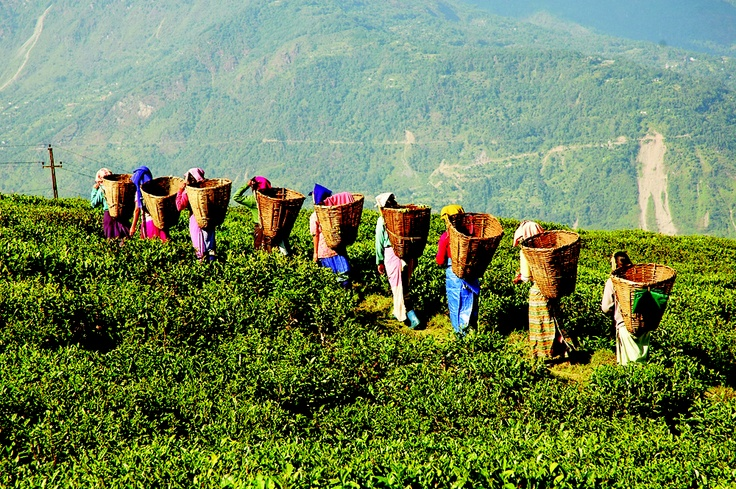
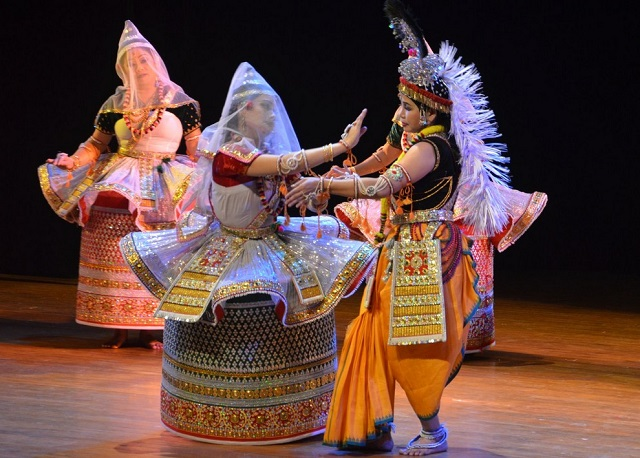
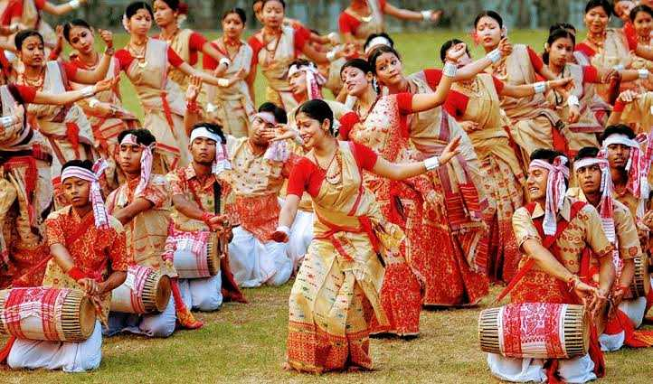

 Ranked second worldwide for its production of teas, Assam celebrates the festival to glorify their authentic and tasteful tea production. The state has gained its popularity by producing some of the finest quality of tea you have ever tasted. They range from white tea to black and green tea along with the regular thin leaf tea and wide leaf tea. The city of Jorhat, known as the Tea Capital of the world, masters the ceremonies of the festival during the month of November. Exhibitions are planned and designed beautifully to show with pride, the growth, and cultivation of tea plants in the state. The festival that lasts for three days permits the visitors to taste the different varieties of tea leaves available. You can also visit the magnificent tea gardens with flourishing green leaves and captivating aromas.  This festival is a celebration of the life of Lord Krishna. The people of Majuli are ardent devotees of Lord Krishna. For several centuries, they have been performing dramas and dances to glorify his deeds. The Vaishnav Monks of the Sattras (monasteries) perform dramas dressed in bright and colourful attire. Children and young men and women from all backgrounds also take part in the plays. Each Sattra showcases Lord Krishna's life in their own way through various songs, plays, dances, puppets and attires. Amazingly, the festivities can go on for up to five days at a stretch. Each night is a feast for the eyes with brilliant colours and emotions from the performers and musicians. People from outside Majuli flock to the island to join in the festivities. This festival not only showcases Lord Krishna in all his glory but also brings to light the rich culture and heritage of the people of Majuli.  The most significant and important of all the cultural and vibrant celebrations in Assam is the Bihu festival. Comprising of Rongali, Magh, and Kati Bihu, this celebration brings the people of Assam together, irrespective of caste, religion, creed, gender, or race. Rongali Bihu is celebrated in April, marking the new harvest season coinciding with the new year with respect to the Hindu Calendar. People wear new clothes, prepare traditional food such as pitha, larus and pray for a good and prosperous year ahead. You can find people dancing in vibrant clothes and singing traditional folklores. Kati Bihu, in October, is practised to protect the crops and pray for a good harvest at the end of the season. Ther animals are also prayed to and fed special preparations of food. There is not much merriment during Kati Bihu. Bhogali Bihu (from the word 'Bhog' meaning food) is celebrated during the second week of January, marking the harvest season's end. During this time is when the granaries are filled up again with crops. Bonfire feasts, along with traditional dancing and singing, are common even in the cold of the night. Events such as bullfights, cockfights, and egg fights are common games played by the rural folk.